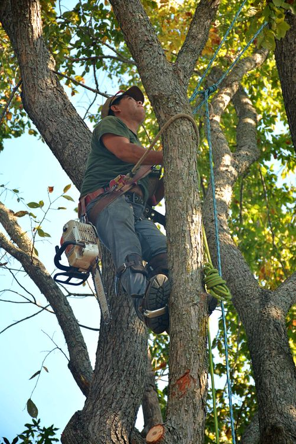
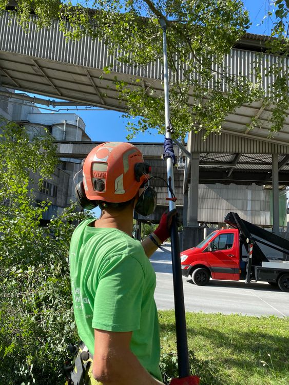

Tree removal
Removal of small and large trees, with attention to nearby homes and landscaping.

Tree care in Raleigh, North Carolina
Tree removal, thoughtful pruning, and help after the storm. Local tree care, with a person you can call.
Call NowExplore our services ↗John Robertson / Pexels · Source
Every tree and property is different. Here are the services you can discuss with Brown's.
Removal of small and large trees, with attention to nearby homes and landscaping.
Manage dead branches, open up light, and shape a healthier canopy.
Emergency tree and crane services for storm damage and urgent situations.
Stump grinding and removal to make space for what comes next.
Ask about local deliveries of mixed wood chips for your property.

Brown's Tree Service is based in Raleigh. Owner/operator Craig Brown gives estimates and works on site, keeping the conversation close to the people doing the work. From a crowded canopy to a fallen tree, start by telling the team what your property needs.
Call with your location and a description of the work you have in mind.
Ask about an estimate, access to the property, and timing.
Confirm the scope of work directly with Brown's before making arrangements.
Yes. Brown's lists trimming, pruning, and tree removal among its services.
Call (919) 845-6222 to discuss your property and ask about an owner/operator estimate.
Brown's offers emergency tree and crane services. Call directly to discuss the situation and current availability.
The business is based in Raleigh. Share your address when you call to confirm service for your location.
A question, a fallen branch, a bigger job. Call Brown's and talk through the next step.
Call Now5104 Yachtsman Ct, Raleigh, NC 27615, USA
Get directions ↗